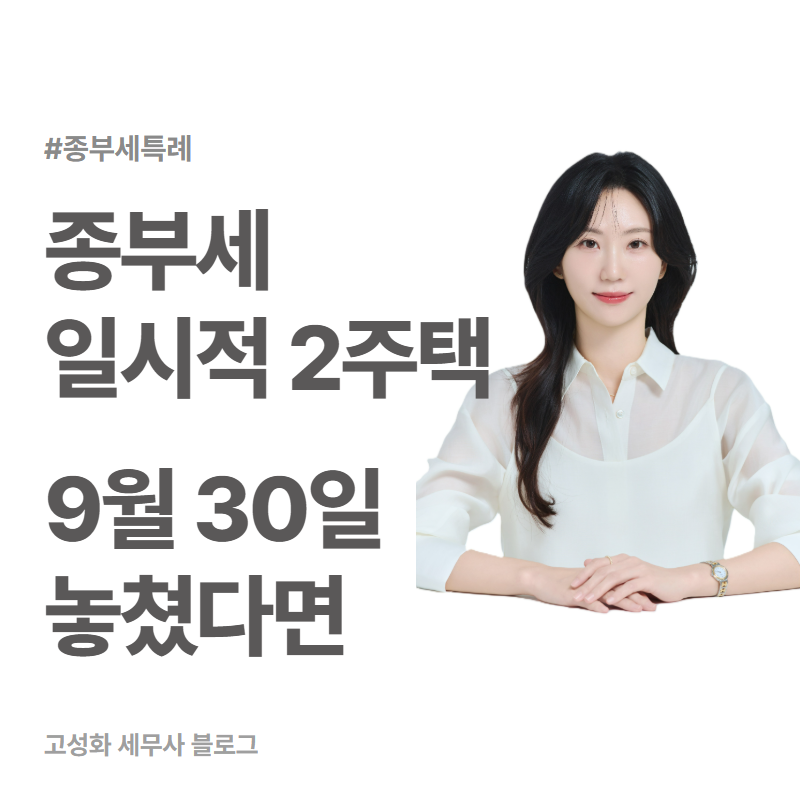
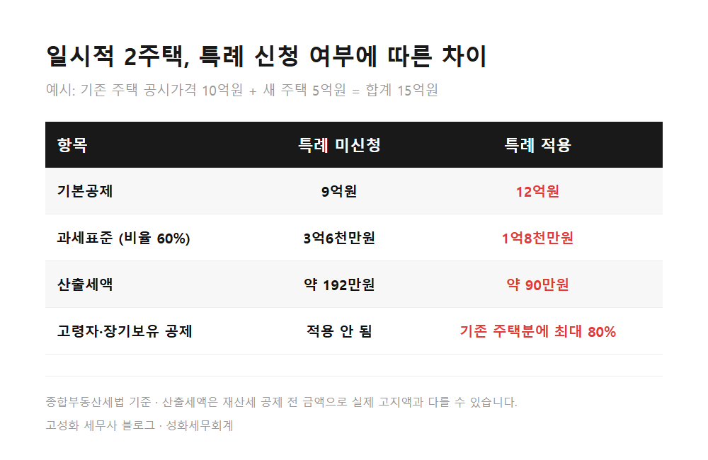
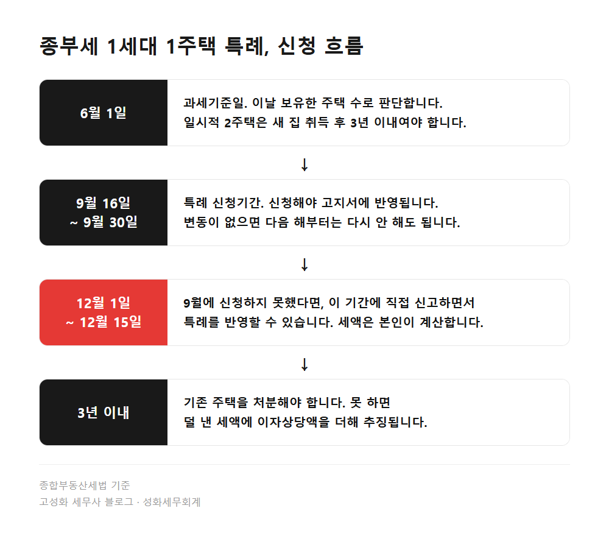
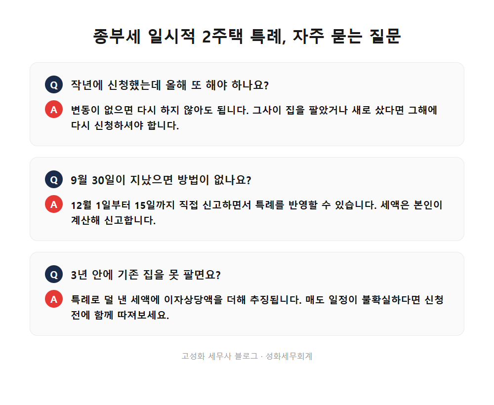

종부세 일시적 2주택 특례 신청, 9월 30일 놓쳤다면

이사 갈 집을 먼저 사고, 살던 집은 아직 팔리지 않은 상태. 요즘 부동산 상담에서 가장 흔하게 보는 모습입니다. 그런데 9월에 따로 신청해야 하는 게 있다는 걸 모르고 지나가는 분들이 계십니다.
성화세무회계에서 주택 관련 신고를 도와드리면서 매년 9월 말이면 꼭 한 번씩 드리는 안내가 있습니다. 오늘은 그 이야기입니다.
이 글을 보고 계신 분은 아마 이런 상황일 겁니다. ① 새 집을 사고 기존 집을 아직 처분하지 못한 분, ② 부모님 집을 상속받아 서류상 2주택이 된 분, ③ 지방에 작은 집이 하나 더 있는 분, ④ 9월 30일 신청기간을 이미 넘겨버린 분.
종부세 1세대 1주택 특례는 신청해야 적용되는 제도이고, 9월 16일부터 30일까지가 신청기간입니다. 이 기간을 놓쳤더라도 12월 신고기간에 직접 신고하면서 반영하는 길이 남아 있습니다.
- 종부세 일시적 2주택 특례, 무엇을 신청하는 건가요
- 1세대 1주택으로 인정받으면 얼마나 달라지나
- 9월 30일을 넘겼다면, 12월에 직접 신고하는 방법
- 신청하고 나서 더 조심해야 할 부분
한눈에 보기



자주 묻는 질문
작년에 특례 신청을 했는데 올해 또 해야 하나요?
신청 내용에 변동이 없다면 다시 하지 않아도 됩니다. 다만 그사이 집을 팔았거나 새로 샀다면 변동이 생긴 것이라 그해에 다시 신청하셔야 합니다.
9월 30일이 지났는데 이제 방법이 없나요?
12월 1일부터 15일까지 종부세를 직접 신고하면서 특례를 반영할 수 있습니다. 고지서 금액을 그대로 내는 방식이 아니라 세액을 본인이 계산해 신고하는 방식입니다.
3년 안에 기존 집을 못 팔면 어떻게 되나요?
특례로 덜 낸 세액에 이자상당액을 더해 추징됩니다. 매도 일정이 불확실하다면 신청 전에 이 부분까지 같이 따져보시는 게 좋습니다.
정리하면
종부세 일시적 2주택 특례는 요건이 맞아도 신청해야 적용되고, 신청기간은 매년 9월 16일부터 30일까지입니다. 이 기간을 놓쳤다면 12월 신고기간에 직접 신고하면서 반영하는 방법이 있습니다.
제가 권해드리는 건, 고지서를 받기 전에 내 경우가 어느 특례에 해당하는지부터 확인해두시는 겁니다. 새 집 취득일이 언제인지, 상속주택 지분이 몇 퍼센트인지, 지방 주택의 공시가격이 얼마인지에 따라 적용 여부가 정해지고, 12월에 직접 신고하려면 세액 계산까지 맞춰야 하니까요. 내 상황에 대입해보는 게 막막하시다면 편하게 문의 주세요.
본문 전체와 근거 조문은 블로그에서 확인하실 수 있습니다.